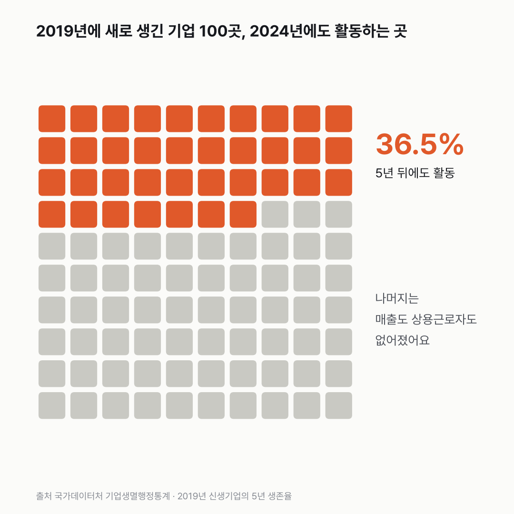
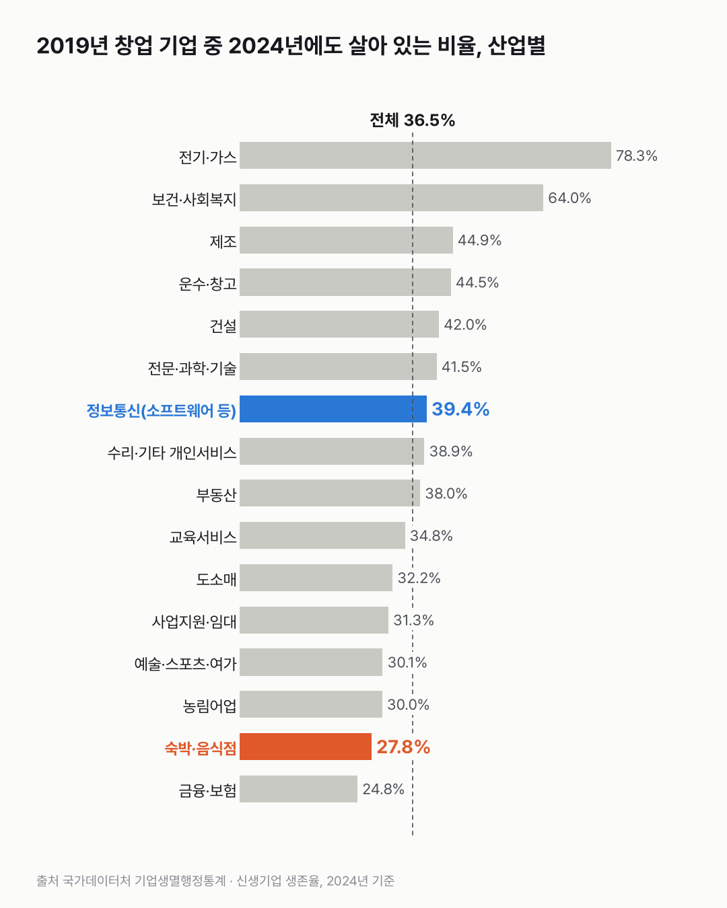
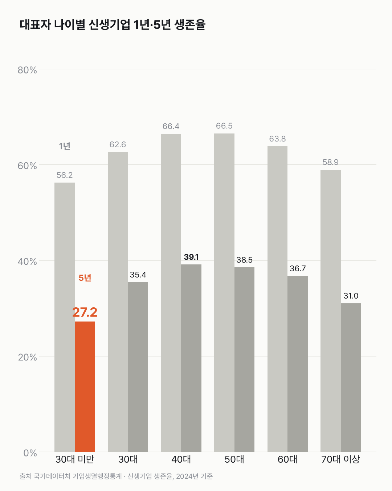

새로 생긴 기업, 5년 뒤까지 남는 건 셋 중 하나 남짓이에요
새로 생긴 기업 열 곳 중 여섯 곳 넘게는 5년 안에 매출도 상용근로자도 모두 없어져요.

- 2019년에 새로 생긴 기업 중 2024년에도 활동하는 곳은 36.5%예요. 100곳이면 37곳이 남아요.
- 2023년에 생긴 기업은 1년 뒤 63.9%가 남았어요. 첫해에 36.1%가 없어졌어요.
- 숙박·음식점(27.8%)과 대표가 30세 미만인 기업(27.2%)은 5년 뒤 남은 비율이 전체보다 낮아요.
28.6%. 2011년에 문을 연 기업 가운데 2016년까지 남은 곳이에요. 같은 잣대로 2019년 창업 기업은 5년 뒤 36.5%가 남았어요. 예전보다는 조금 더 오래 버티는 거예요.
첫해는 그때나 지금이나 가팔라요. 1년 생존율은 60% 안팎에서 65% 사이를 오갔고, 2023년 창업 기업은 63.9%였어요. 첫해에만 36.1%가 사라진다는 얘기예요. 생각보다 빨랐어요.
업종마다 달라요. 숙박·음식점은 5년 뒤 남은 곳이 27.8%로 전체보다 9%p 가까이 낮아요. 정보통신업(소프트웨어·출판·방송·통신 등)은 39.4%로 전체보다 조금 높았어요.

대표 나이로 나눠도 갈려요. 대표가 30세 미만이면 5년 뒤 남은 곳이 27.2%, 40대는 39.1%예요. 12%p 차이. 70대 이상도 31.0%로 낮은 편이었고, 1년 생존율은 30세 미만이 56.2%로 가장 낮았어요.

숙박·음식점도, 30세 미만 대표도 27%대예요. 그럼 30세 미만이 연 음식점은 5년 뒤 얼마나 남을까요? 다음에 새 간판을 보면 그 질문이 먼저 떠오를 것 같아요.
이 숫자는 어디서 왔나요
출처
| 데이터 | 출처 | 쓰임 |
|---|---|---|
| 산업별 신생기업 생존율 (KOSIS DT_2BD1103) | 국가데이터처 「기업생멸행정통계」 | 전체·19개 산업의 1~7년 생존율과 생존기업 수 |
| 대표자 성·연령별 신생기업 생존율 (KOSIS DT_2BD1104) | 국가데이터처 「기업생멸행정통계」 | 대표자 나이대별 1~7년 생존율 |
- 신생기업: 전년에는 활동이 없다가 그해 매출액이나 상용근로자가 생긴 영리기업(개인사업자 포함).
- 소멸기업: 매출액과 상용근로자가 모두 없어진 기업.
- KOSIS 표의 연도는 생존을 잰 해다. 그래서 2024년 값의 1년 생존율은 2023년 창업 기업, 5년 생존율은 2019년 창업 기업 기준이다.
- 교차 확인: 2023년 값의 1년 생존율 64.4%는 보도된 '2022년 신생기업 1년 생존율 64.4%'와 같고, 2024년 값 63.9%(1년)·36.5%(5년)도 보도 수치와 같다.
- 검증: 두 표의 '전체' 값이 같은지, 같은 창업 연도 안에서 생존율이 해마다 줄어드는지 확인했다.
- 수집일: 2026-10-29 (KOSIS 오픈API).
- 대표 차트의 '100곳 중 37곳'은 5년 생존율 36.5%를 반올림해 100칸 중 37칸을 칠한 거예요. '세 곳 중 두 곳꼴'은 없어진 비율 63.5%(100 − 36.5)를, '셋 중 하나꼴'은 1년 안에 없어진 36.1%(100 − 63.9)를 어림한 말이에요.
기준일
2024년에 잰 생존율(1년 = 2023년 창업, 5년 = 2019년 창업).
한계 7가지
이 데이터로 말할 수 없는 것
- 생존율마다 창업 연도가 다르다. 같은 2024년 값이라도 1년 생존율은 2023년, 5년 생존율은 2019년 창업 기업이다. 서로 다른 무리를 한 그림에 놓았다.
- 산업·나이 차이에는 구성 차이가 섞여 있다. 같은 산업 안에서도 규모와 세부 업종이 다르고, 나이대마다 창업하는 업종이 다르다. "어느 산업, 어느 나이가 창업하기 좋다"는 뜻이 아니다.
- 정보통신업은 앱개발만이 아니다. 소프트웨어 개발 외에 출판, 방송, 통신, 정보서비스가 함께 들어 있다. 세부 업종 생존율은 이 표로 알 수 없다.
- '소멸'은 망한 것과 같지 않다. 매출액과 상용근로자가 모두 없어진 것이다. 다른 사업자로 바꾸거나 합친 경우가 섞일 수 있다.
- 대표자 나이의 기준 시점은 확인하지 못했다. 창업할 때 나이인지, 잰 해의 나이인지 통계설명자료로 확인이 필요하다.
- 표본이 작은 산업은 뺐다. 1년 생존기업이 1,000개보다 적은 광업, 수도·폐기물은 차트에서 제외했다.
- 원인은 말하지 않는다. 경기, 업종 경쟁, 지원 정책 등 이유는 이 데이터로 알 수 없다.
전제 기록
데이터를 보기 전에 적어둔 것, 그리고 보고 나서 바꾼 것
- 전제 기록(premises)(데이터를 받기 전에 작성)를 따랐다.
- 전제 1(기간의 의미)은 보도 수치와 대조해 "생존을 잰 해"로 확정한 뒤 해석했다.
- 받은 뒤 정한 것: 표본이 작은 산업을 빼는 기준(1년 생존기업 1,000개)은 결과를 본 뒤 정했다. 빠진 두 산업은 각주에 이름을 적었다.
질문
동네 거리에 새 간판이 걸리고, 몇 달 뒤 그 자리에 또 다른 간판이 걸리는 일. 흔히 보죠. 그 간판들이 실제로 얼마나 버티는지 숫자로 보고 싶었어요. 여기서 '기업'은 개인사업자까지 들어간 영리기업이라, 동네에 새로 문을 연 가게도 들어가요. 1년 뒤, 5년 뒤에 몇 곳이 남는지, 업종과 대표 나이에 따라 얼마나 다른지 봤어요.
새 글 나오면 받아 보기
지금은 RSS로 받을 수 있어요. 메일은 아직 준비 중이에요.